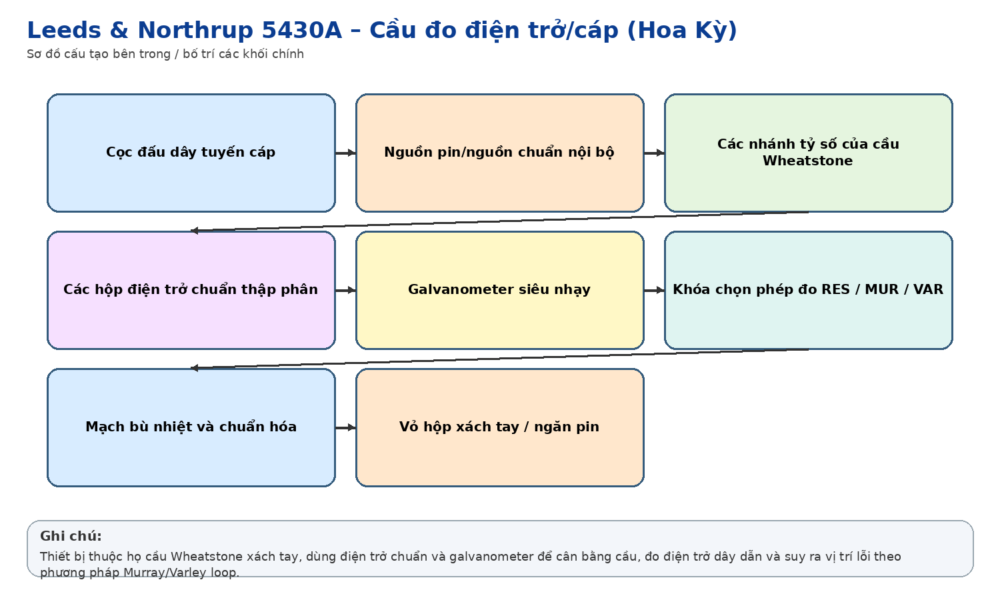
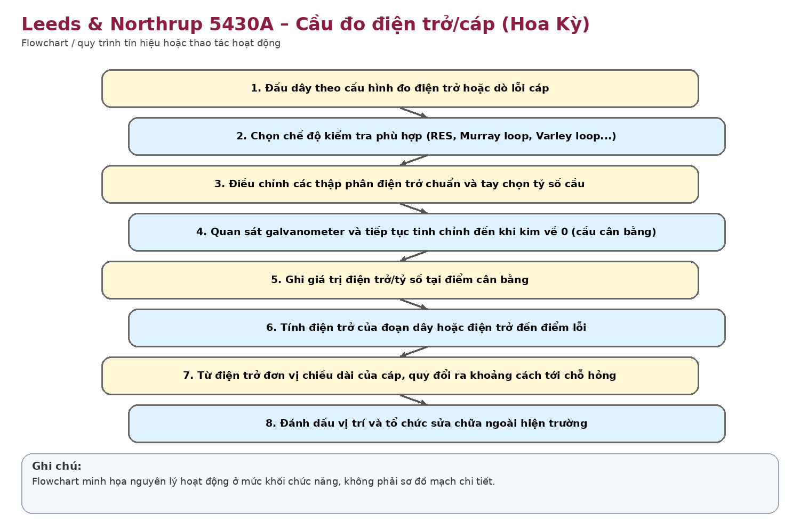

Nhận dạng & niên đại
Công dụng
Công dụng chung
Đo điện trở dây dẫn với độ chính xác cao; kiểm tra mất cân bằng điện trở; xác định vị trí lỗi cáp bằng các phép đo cầu như Murray loop và Varley loop.
Trong thông tin tín hiệu đường sắt
Phù hợp công tác đo cáp thông tin hữu tuyến, xác định vị trí chạm đất/chạm dây hoặc đứt mạch dựa trên điện trở tuyến – một phương pháp phổ biến trước khi TDR điện tử trở nên thông dụng.
Phạm vi làm việc
Ưu điểm: chính xác, bền, không cần mạch điện tử phức tạp. Nhược điểm: thao tác và tính toán thủ công, phụ thuộc điện trở dây và điều kiện đo.
Cấu tạo bên trong

Galvanometer nhạy; các hộp điện trở chuẩn/decade; các nhánh tỷ số cầu; khóa chọn RES/VAR/MUR; bộ chọn độ nhạy GA SENS; nguồn pin trong/ngoài; cọc đấu dây và công tắc kiểm tra.
Cách thức hoạt động

Cầu Wheatstone được cân bằng đến khi galvanometer về 0. Từ tỷ số điện trở chuẩn và điện trở dây chưa biết suy ra giá trị điện trở. Với Murray/Varley loop, điện trở từ đầu đo đến điểm lỗi được quy đổi thành chiều dài dựa trên điện trở đơn vị của dây và chiều dài vòng cáp.
Thông số kỹ thuật
Thông số chính
Không ghi thông số định lượng vì chưa xác định chắc biến thể model. Dấu hiệu chức năng nhìn thấy trên hiện vật: RES/VAR/MUR, GA SENS, các núm điện trở theo decade và galvanometer kim.
Nguồn điện / cấp nguồn
Chủ yếu phép đo cầu dùng pin/nguồn DC nội bộ hoặc nguồn ngoài; không phải máy điện tử công suất lớn.
Giá trị lịch sử – trưng bày
Có giá trị trưng bày rất cao khi đặt cạnh R5-10: cho thấy quá trình chuyển từ dò lỗi cáp bằng cân bằng cầu điện trở sang TDR hiển thị trực tiếp điểm phản xạ.
Tình trạng quan sát
Vỏ gỗ/kim loại và mặt máy đã cũ, có bong tróc; các núm và galvanometer còn hiện diện. Chưa kiểm tra linh kiện trong và pin.
Ảnh hiện vật

Xác minh thêm & nguồn tham khảo
Căn cứ mốc sử dụng tại Việt Nam/ĐSVN:
Giả
thuyết lịch sử; cần hồ sơ tài sản hoặc biên bản tiếp quản để xác
nhận.